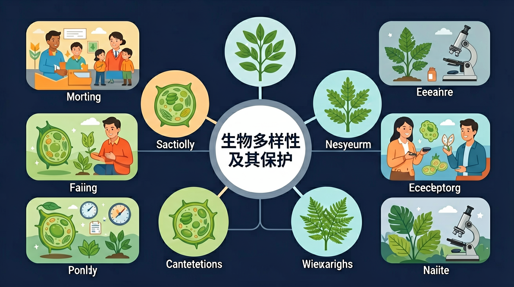
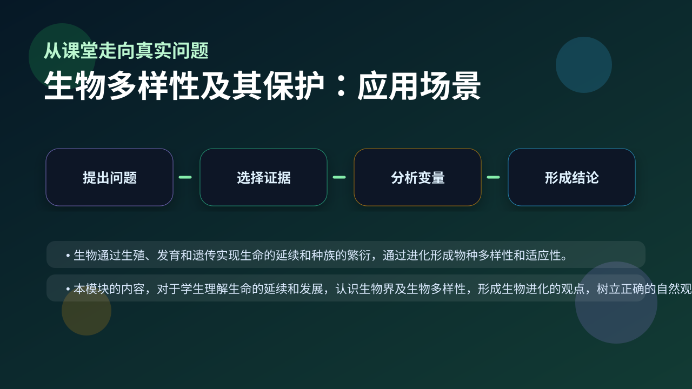

Gallery v1.0.0 · skill v7.14
个体差异怎样在环境选择下变成种群层面的改变？

已经知道：此前已学习过生态系统的组成（生产者、消费者、分解者）和食物链结构，并掌握物种、种群、群落等基本概念，了解遗传变异是生物进化的基础。
但问题是：学生常混淆基因多样性（同一物种内差异）与物种多样性（不同物种数量），且难以理解热带雨林等生态系统的多样性如何通过共生、竞争等相互作用维持稳定性。
所以学：当自然保护区工作人员评估濒危物种保护方案时，需要同时分析该物种的基因库丰富度、在食物网中的位置，以及栖息地生态系统的完整程度，才能制定科学保护策略。
先选一个卡点。后面的例子、互动和 AI 学伴都会围绕它给你最小提示。
选择或输入后，本课会围绕你的问题展开。
以下哪种行为最能体现生物多样性的潜在价值？
现象入口：同一地区的基因、物种和生态系统多样性共同支撑生态服务功能。
机制解释：生物多样性包括基因多样性、物种多样性和生态系统多样性，是长期进化和生态相互作用的结果。
证据抓手：证据来自物种调查、遗传多样性检测、生态系统服务评估和保护成效。
变量线索：栖息地面积、物种数量、遗传变异、人类干扰和保护措施。做题时先找变量，再判断机制，最后写证据。
观察大熊猫栖息地内竹种分布与基因多样性关系
分析自然保护区如何同时保护基因库、物种和生态过程
阐明外来物种入侵通过竞争打破原有生态平衡的机制
设计红树林修复方案时需考虑的本地物种共生关系
情境：建立自然保护区主要保护栖息地和生态过程，而不只是保护某一个个体。
作答路径：建立卧龙自然保护区→通过划定原生栖息地保护区域→使大熊猫种群能自然繁衍（物种多样性），同时保护箭竹群落（生态系统多样性）及不同亚群的基因差异（基因多样性）
评分提醒：典型失分：混淆就地/易地保护（如将动物园等同于保护），或仅答出单一多样性类型（如只提物种不提基因多样性）
用 PhET 观察环境压力如何改变种群中不同表型个体的比例，再讨论它和 生物多样性及其保护 的关系。
💡 操作提示：改变环境、捕食者或突变条件，记录种群数量曲线，判断哪些变化是个体层面，哪些是种群层面。
真实定律 S=cA^z：栖息地面积越大，能容纳的物种越多——保护区面积直接决定能保住多少物种。
💡 探究任务：调环境质量（c 值），观察物种数随面积的增长曲线，解释为什么建立大面积自然保护区是就地保护的核心。
把多样性只理解为物种数量，忽略基因和生态系统层次。
只说“增加/减少”不够，要写清改变的是 栖息地面积、物种数量、遗传变异、人类干扰和保护措施 中的哪一个。
没有实验现象、曲线趋势或结构证据，答案就像猜测。
关于生物多样性保护措施正确的是？
视频用语音和动态画面回顾本课主线：问题情境 → 机制模型 → 证据判断 → 迁移应用。

分析就地保护、迁地保护和生态红线，要说明保护对象和层级。
提交后会检查你的解释是否包含现象、机制和变量。
如果学生只说出概念名称，继续追问：题干里哪个证据最关键？这个证据对应分子、细胞、个体还是生态系统层级？如果改变 栖息地面积、物种数量、遗传变异、人类干扰和保护措施 中的一个条件，结果会怎样？这三问能把答案从背诵推进到科学解释。
列举生物多样性的三个价值类型并各举一例
分析红树林遭破坏会如何影响其间接价值中的生态功能
设计保护滇金丝猴的方案，需说明包含哪类多样性保护及具体措施
下列哪项措施能同时保护基因、物种和生态系统多样性？
学习小结：生物多样性保护需区分基因/物种/生态系统三个层次，优先采用就地保护（如自然保护区）维持生态过程完整性
先独立作答，再点选项查看对错与错因。
水葫芦入侵导致黑藻减少，直接影响的是生物多样性的哪个层次？
下列哪项最能体现校园生态池的生态系统多样性？
为保护生态池生物多样性，最合理的措施是：
黑藻通过____生殖方式产生遗传差异，这种多样性属于____层次。
答案：有性,遗传
有性生殖带来基因重组，遗传多样性指基因差异
记录到5种蜻蜓幼虫说明该生态池具有较高的____多样性，而它们取食不同水生生物体现了____的多样性。
答案：物种,营养结构
物种数量反映物种多样性，食性差异构成不同营养关系
关于生物多样性价值的叙述正确的是：
设计实验探究水葫芦覆盖率与沉水植物生长的关系
❓ 为什么保护大熊猫比保护蚊子更重要？
❓ 动物园里的动物算不算保护生物多样性？
❓ 全球变暖怎么就让北极熊没家了？
学完这一课，这些问题你都能自信地回答。
✅ 需同时关注基因、物种和生态系统三个层次
💡 忽视课标对生物多样性内涵的完整定义
✅ 濒危程度低的物种优先采用就地保护
💡 未理解《生物安全法》对不同保护方式的适用标准
口诀：基因物种生态系统，三位一体要记牢
类比：生物多样性就像网络防火墙，缺失任何模块都会降低防护能力